Introduction
In this test, we will show you a network visualization of ingredients
(e.g. pepper, salt, meat) which have connections between them if they
are often used together in receipes, and you will answer questions about this data.
There is a time countdown for each question, and we will hide the visualization once the time is up.
You will have to provide an answer for each question before continuing.
You will be provided with your turk-code after you finish the study.
Try and answer correctly as fast as possible.
Tasks will be based on a matrix visualization of a network data.
How to interpret the matrix visualization for the tasks
Please take some time to review the following information on how to interpret the matrix visualization.
Networks can be represented as square matrices: network nodes are aligned as columns and rows
of the matrix; a black box in a matrix cell means that there is a connection between the
network nodes that correspond to columns and rows of the two nodes.
For example, in the figure below, the highlighted node "kidney_bean"
has connections to "bean" and "tomato_juice".

Interactions:
-
Panning: You can pan the visualization by holding the left mouse button down
on any part of the matrix (except the row and column headers) and dragging
-
Zooming: You can zoom with the zoom buttons or with the mouse wheel on any part of the matrix except the
row and column headers.
-
Selecting a node: You can select a node by clicking on the row header or the column header.
Selected rows or columns are colored purple.
-
Unselecting a selected node: You can unselect a selected row or column by double-clicking on it.
- When you hover your mouse over a row header or column header, the row or column is highlighted green.
- When you hover your mouse over a link (i.e. a black box in the matrix), the row and the column that
the link connects to are highlighted green.
The images below show an example of a selected row, a hovered row and a hovered link respectively.
 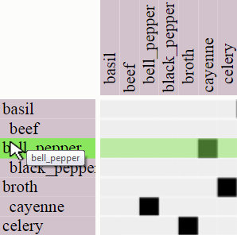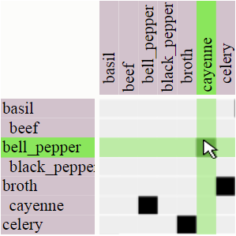
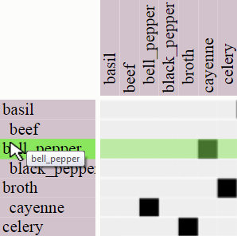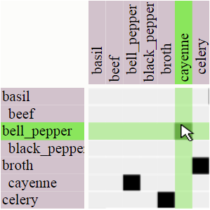
Tasks you will be performing for this study
Task1: You will determine which among two nodes has the highest number of connections.
You will be asked the following question:
"Given the two highlighted nodes, select the one with the highest number of connections"
Task2: You will find all the nodes connected to a highlighted node.
You will be asked the following question:
"Select all the neighbors of the highlighted node."
Task3: For two highlighted nodes, you will determine all the nodes that they are both connected to.
You will be asked the following question:
"Given the two highlighted nodes, select all of the common neighbors"
You can see example task instances with answers for the tasks below.
Sample Question instances and answers for Task1
Note: All nodes selected as part of each question are highlighted red and all edges of
such nodes are highlighted red as well.
-
Given the two highlighted nodes, select the one with the highest number of connections

Answer
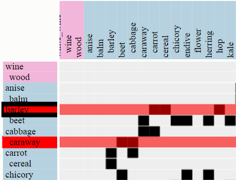
- Given the two highlighted nodes, select the one with the highest number of connections
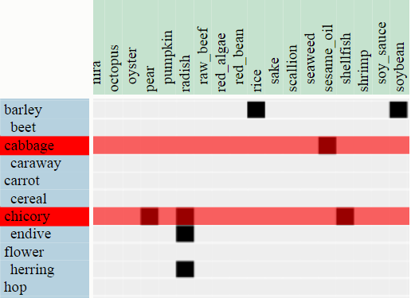
Answer
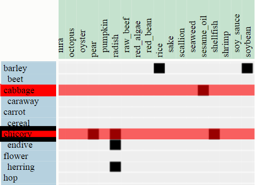
Sample Question instances and answers for Task2
- Select all the neighbors of the highlighted node.

Answer

- Select all the neighbors of the highlighted node.
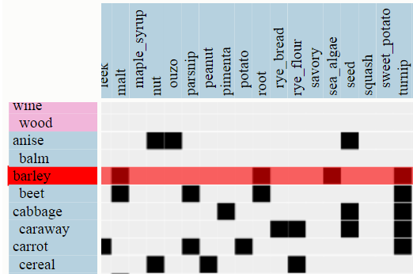
Answer

Sample Question instances and answers for Task3
-
Given the two highlighted nodes, select all of the common neighbors
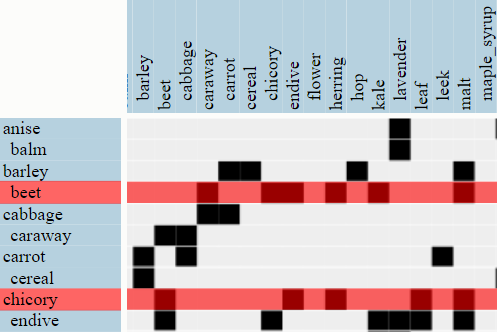
Answer
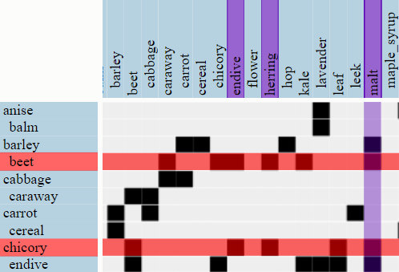
-
Given the two highlighted nodes, select all of the common neighbors
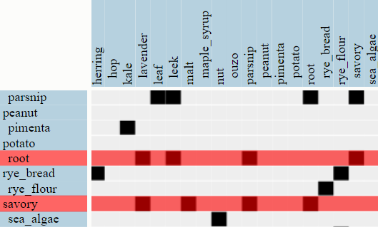
Answer